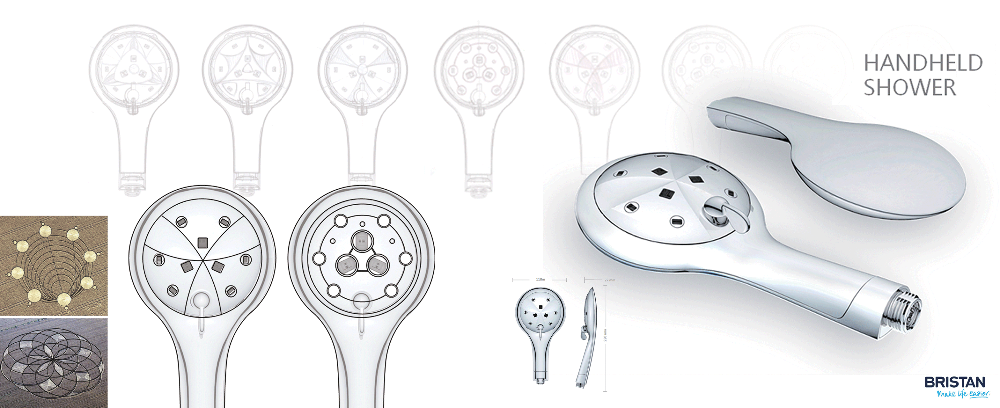
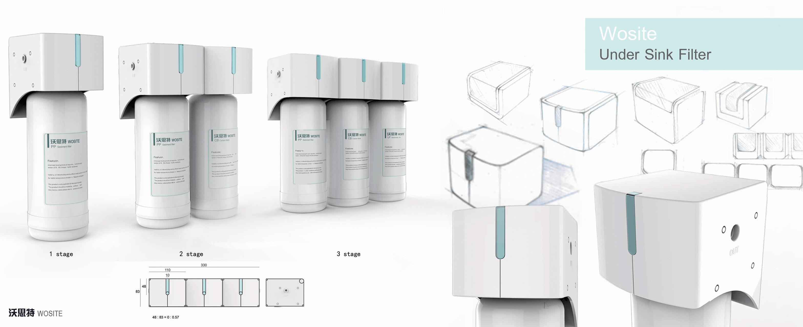
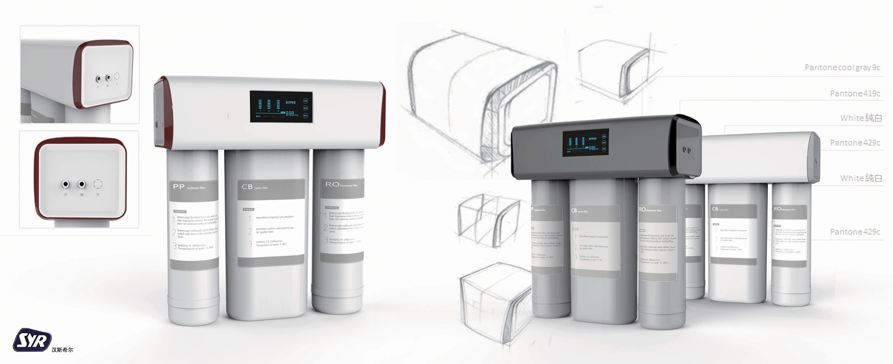

Intwenship Experience
Xiamen, China-Runner Industrial Corporation

由於此款花灑本體走向為簡約扁平,因此我在面板上的設計並 沒有太多的立體走勢,而是強調線條上的細節處理,讓花灑更 為優雅大方。設計靈感來自各式麥田圈裡的幾何曲線排列。

因為是三級拼接台下過濾器,設計上必須考慮一級、二級、三 級在組裝上的協和度。並考慮到結構及成本,外殼的設計上以 方體為主,注重圓角、壓克力板的比例,希望能呈現一種輕巧 乾淨的感覺。

這款RO機因為要共用先前零件,而先前的零件在旁邊兩側有 四方型的面板,為了要讓外觀更為一體,我的設計特點就是旁 邊兩側環型包覆零件,改變方型外觀使造型更柔和。RO機本 身就是一個龐大的機器,希望能在造型上改變厚重的形象。